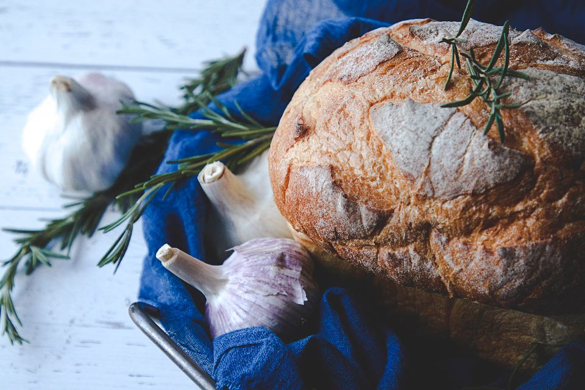
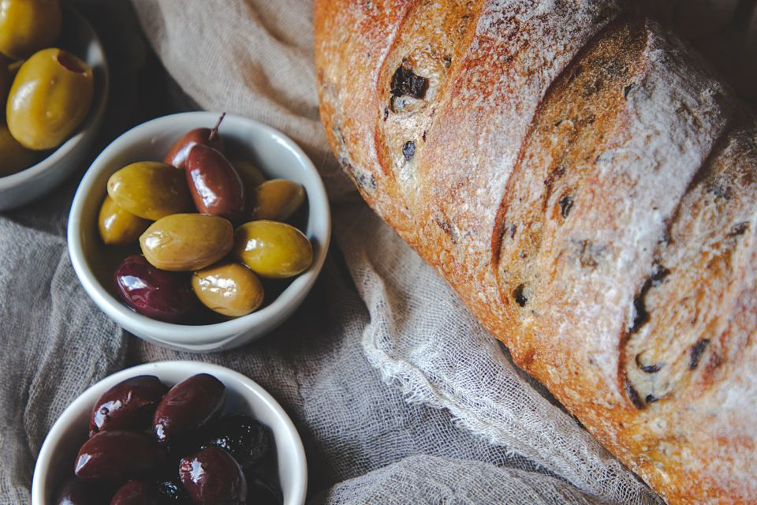
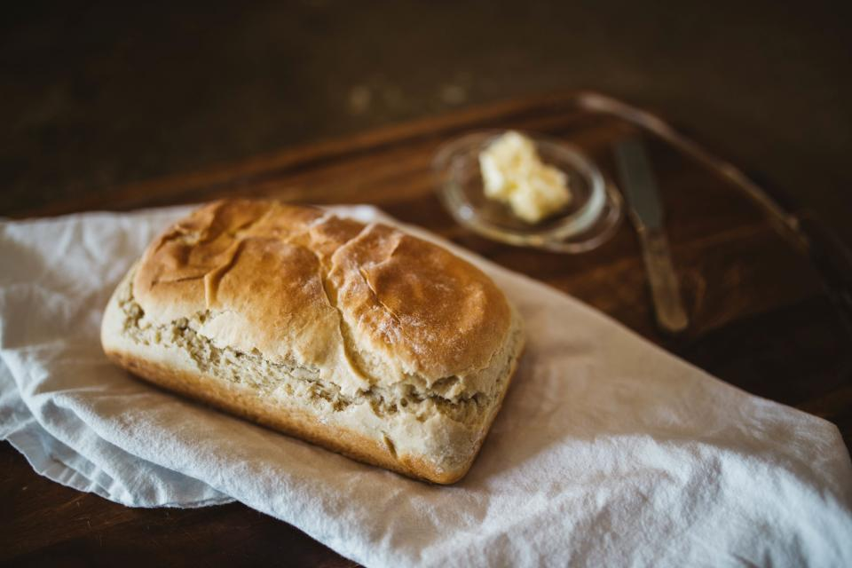
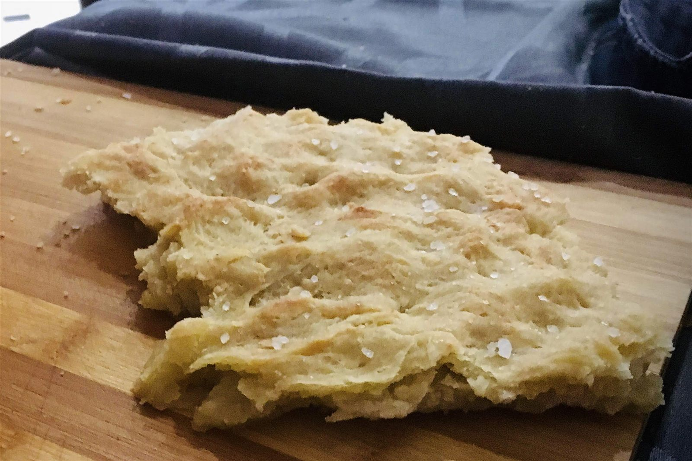
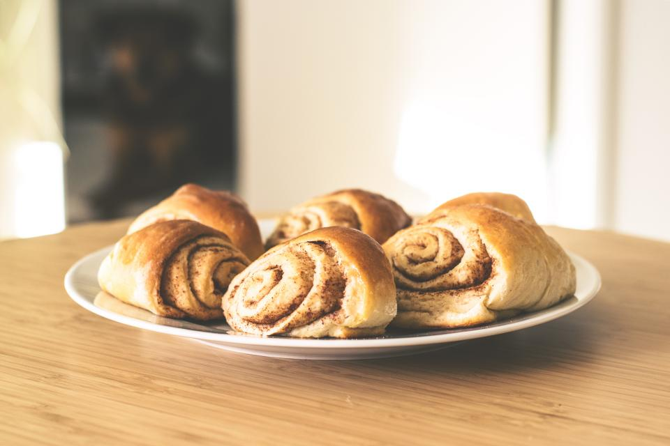
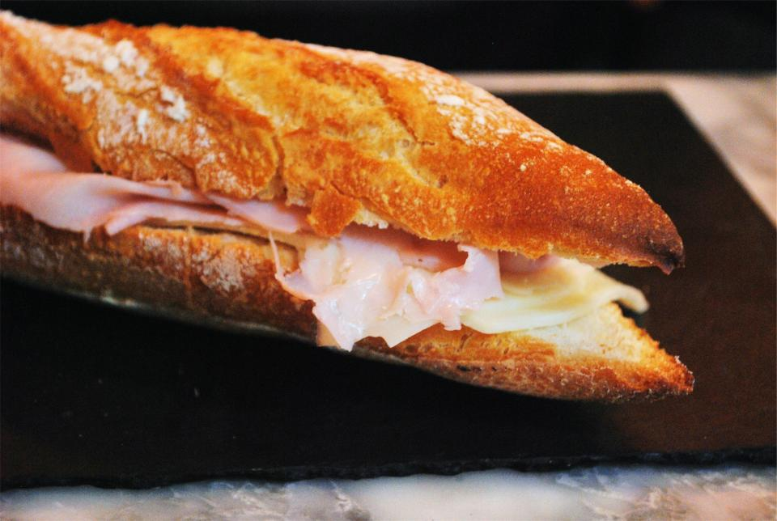

毎日並ぶ、種類豊富なラインナップ
ハード系を軸に、惣菜系からソフト系、フォカッチャ、甘い系、変わり種のサンドまで。焼き上がりや仕込みの状況によって内容は日々変わります。人気の商品は開店直後に並ぶことが多いため、気になる商品がある方は早めのご来店がおすすめです（詳しくはアクセス・来店のコツをご覧ください）。
ハード系（専門ジャンル）
GRAN HEARD BREADの核となるカテゴリです。フランスパン以外の“硬いパン”を専門に、噛むほどに小麦の風味が広がる一本をそろえています。
チョコ入りハードパン
外はパリッと香ばしく、中はもちっとした食感。小麦の香りをしっかり感じられる一品です。
プレーンハードブレッド
噛むごとにザクザクとした歯ごたえが楽しめる、店の定番となるハード系の一本です。
※商品名は特徴をもとにした仮称です。正式名称は確認中です。

※写真はイメージです
惣菜系パン
食事にもぴったりの惣菜系パン。ハード系の生地に具材を合わせた、食べごたえのあるラインナップです。
惣菜フィリングのハードブレッド
食事の主役にもなる食べごたえのある一本です。
※具材の詳細は今後の確認により追記予定です。

※写真はイメージです
ソフト系パン
硬いパンが専門のGRAN HEARD BREADですが、幅広い方に楽しんでいただけるよう、やさしい食感のソフト系パンもご用意しています。小さなお子様にも食べやすい、やわらかな一本です。

※写真はイメージです
フォカッチャ
ふんわりもちもちとした食感が魅力のフォカッチャ。ハード系とはまた違う、やさしい噛みごたえを楽しんでいただけます。

※写真はイメージです
甘い系（クイニーアマン系）
おやつや手土産にも喜ばれる、甘い系のラインナップ。クイニーアマン系を中心に、風味の異なる3種類をご用意しています。
あんバタークイニーアマン
あんことバターを合わせた、甘じょっぱい味わいの一品です。
ピスタチオクイニーアマン
香ばしいピスタチオの風味を楽しめる一品です。
チョコクイニーアマン
外パリッ内もちっの食感にチョコレートの甘みを重ねた一品です。
※商品名は特徴をもとにした仮称です。正式名称は確認中です。

※写真はイメージです
サンド系（変わり種）
意外な組み合わせも楽しめる、変わり種のサンド系。
鴨肉とオレンジドライフルーツのサンド
鴨肉の旨みとオレンジドライフルーツの甘酸っぱさを合わせた、他ではあまり見かけない一品です。
定番にとらわれない組み合わせも、ぜひ店頭でお試しください。

※写真はイメージです